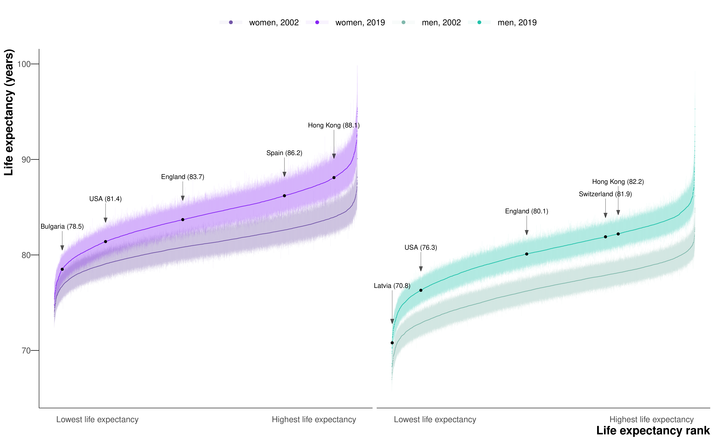
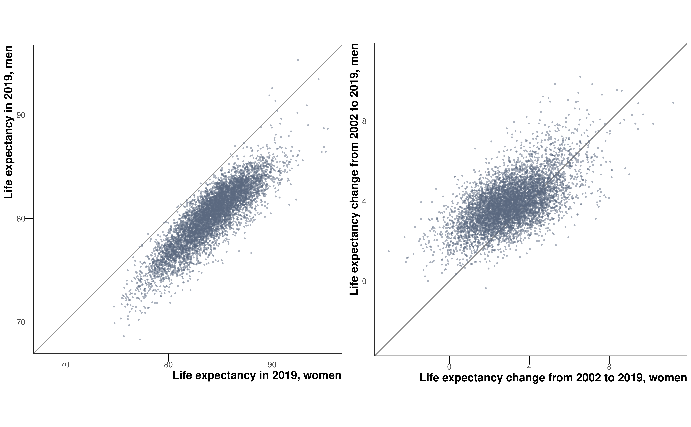
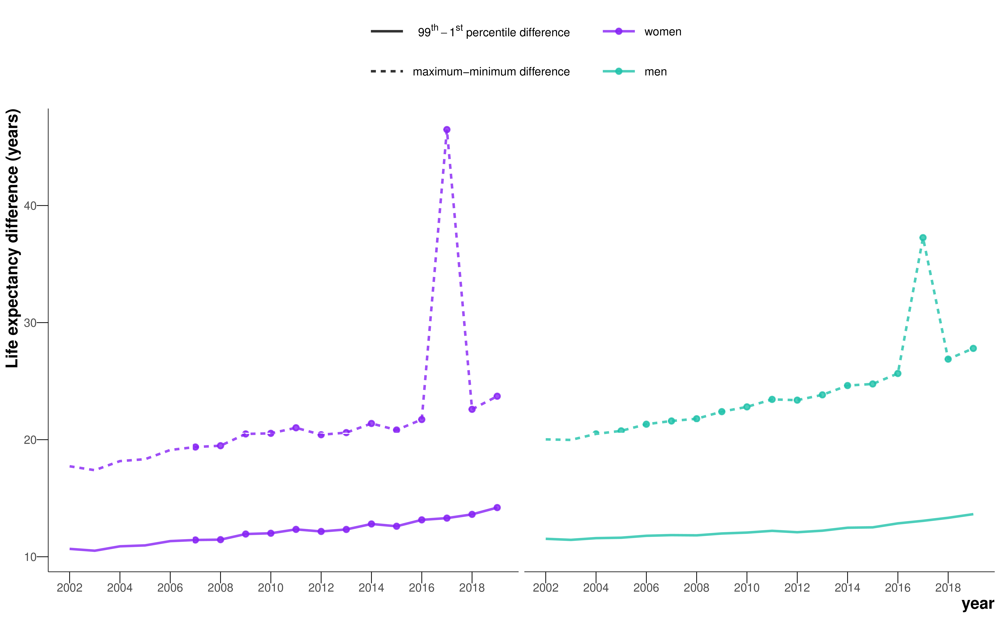
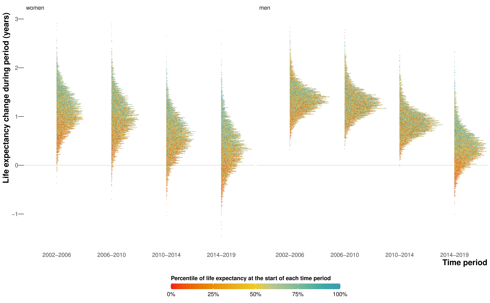

5 Life expectancy trends in England at the MSOA level
This chapter is based on the peer-reviewed publication Life expectancy and risk of death in 6791 communities in England from 2002 to 2019: high-resolution spatiotemporal analysis of civil registration data, published in The Lancet Public Health (Rashid et al., 2021), for which I was first author. The paper was published under the CC-BY license, which permits reproduction provided the original work is properly cited. The figures have been reproduced for the thesis, and the text has been updated but remains much the same as the original.
There have been declines in female life expectancy in England for the most deprived deciles since the start of the 2010s (Bennett et al., 2018; Marmot et al., 2020). However, these studies have only broken England down into deciles of deprivation, rather than looking at geographical variation. And studies of trends in life expectancy have been limited to the district level (Bennett et al., 2015), which masks substantial heterogeneity. In this chapter, I address the first objective of the thesis – to estimate trends in life expectancy for small areas in England from 2002 to 2019 – choosing a smaller unit of analysis than districts: MSOAs.
5.1 Methods
5.1.1 Mortality and population data
I performed a high-resolution spatiotemporal analysis of all deaths in England from 2002 to 2019 (8,646,878 death records, extract date: 25th June 2021), as detailed in Chapter 3. Deaths were stratified by 19 age groups (0, 1–4, 5–9, …, 80–84, 85+) and 6791 MSOAs. I did not use 129 death records (<0.001%) for which sex was not recorded. In 48 (0.001%) age-MSOA-year combinations, the number of deaths exceeded population. Most of these were in people aged 85 years and older. In these cases, the population was set equal to the number of deaths.
5.1.2 Statistical analysis
The model for the analysis is described in Chapter 4. Here, the spatial units \(s\) are MSOAs. I found that mortality at the MSOA-level was sufficiently low such that death rates never came close to 1, so the negative binomial distribution was a suitable likelihood.
For the main analysis, the spatial intercepts and slopes, \(\alpha_{1s}\) and \(\beta_{1s}\), were modelled as nested hierarchical random effects. For comparison, I also modelled the spatial effects using a BYM model, as in Equation 2.3. The CAR component of the model requires all spatial units to have neighbours. Thus, the MSOAs containing the Isle of Wight, Hayling Island, the Isles of Scilly and Canvey Island were each joined to the nearest mainland MSOA based on road or ferry connections.
The results of the spatial model were virtually identical to the hierarchical random effects model (correlation coefficient 0.999 for female and male sexes; mean difference 0.03 years for women and 0.009 years for men; mean absolute difference 0.07 years for women and 0.09 years for men for life expectancy estimates from the two approaches). I present results from the hierarchical model for two reasons. First, it allows neighbouring MSOAs that fall in different districts to differ more than those within the same district, reflecting the relevance of district as a unit of resource allocation and policy implementation. Second, the hierarchical model was computationally less demanding with run times about 1.4 times faster than the spatial model.
Inference was performed using MCMC in NIMBLE package (de Valpine et al., 2022, 2017). I monitored convergence using trace plots and the R-hat diagnostic (Vehtari et al., 2021) and thinned post burn-in samples to reduce memory and storage use. For women, I ran four chains for 150,000 iterations, discarding the first 50,000 and thinning the remainder by 400 to obtain 1,000 post-burn-in draws from the posterior distribution of model parameters. For men, due to slower mixing, I ran eight chains for 150,000 iterations, discarding the first 100,000 and thinning the remainder by 400.
In 2017, the MSOA in Kensington and Chelsea, London where Grenfell Tower is located had 119 deaths, compared with 48 in 2016 and 51 in 2018. The additional deaths were caused by a fire in a highrise residential building. This outlier year led to unstable estimates of the longterm trend in life expectancy in this MSOA, and also slightly changed estimates in other MSOAs in the district. To avoid this instability, when applying the statistical model, I replaced the number of deaths for this year with the mean of those in 2016 and 2018 for each age and sex group. When making estimates for 2017, the difference between actual and interpolated deaths was added back to the posterior estimates so that these deaths were counted in the corresponding year. The Grenfell Tower fire incident was, to the best of our knowledge, the only spatially-specific, long-tailed mortality event in England over the study period.
I calculated life expectancy at birth, and probability of dying at specific ages by sex and MSOA using life table methods1.
The reported 95% credible intervals (CrIs) represent the 2.5th to 97.5th percentiles of the posterior distribution of estimated life expectancies. I also report the posterior probability that the estimated change over time in an MSOA represents an increase versus a decrease in life expectancy. Posterior probability represents the inherent uncertainty in life expectancy trends. In an MSOA in which the entire posterior distribution of life expectancy in 2019 is greater than in 2002, there is a 100% posterior probability of an increase, and hence around a 0% probability of a decrease, and vice versa. Posterior probabilities more distant from 50% indicate more certainty.
5.2 Results
5.2.1 Inequalities in life expectancy
In 2019, there was a 20.6 year (95% CrI 17.5–24.2) gap for women between the MSOA with the highest life expectancy (an MSOA in Camden, London; 95.4 years (92.4–98.7)) and the MSOA with the lowest life expectancy (an MSOA in Leeds; 74.7 years (73.4–76.2)). The gap was 27.0 years (23.4–31.1) for men, between an MSOA in Kensington and Chelsea, London (95.3 years (92.1–99.3)) and an MSOA in Blackpool (68.3 years (66.9–69.6)). The difference between the first and 99th percentiles of life expectancy in 2019 was 14.2 years (13.9–14.5) for women and 13.6 years (13.4–13.9) for men.

When all MSOAs were ranked on the basis of their life expectancy, the difference between successively ranked MSOAs was particularly large for the approximately 5% of MSOAs with the lowest and highest life expectancy (seen as the sharper decline or rise at the two ends of the ranked life expectancy curve in Figure 5.1), indicating distinct groups at extreme advantage and disadvantage.
The 124 (1.8%) of 6791 MSOAs with the lowest female life expectancy and 262 (3.9%) MSOAs with the lowest male life expectancy in 2019 were located in urban areas, particularly in the north, including Blackpool, Leeds, Liverpool, Manchester, and Newcastle. Many of the MSOAs with the highest life expectancy, especially for men, were in London and its neighbouring districts (Figure 5.2).
5.2.2 Change in life expectancy
Female and male life expectancy were correlated across MSOAs with a correlation coefficient of 0.87 (Figure 5.3). Female life expectancy was higher than male life expectancy in all but 15 MSOAs. The female advantage was more than 5 years in 1498 (22.1%) of 6791 MSOAs and 1–5 years in another 5187 (76.4%). From 2002 to 2019, a decline in life expectancy was more probable than an increase in 124 mostly urban MSOAs of 6791 (1.8% of all MSOAs) for women, with posterior probabilities of greater than 80% in 34 of these. The largest estimated decline of 3.0 years (0.9–5.3; posterior probability of the estimated decline being a true decline 99.6%) occurred in an MSOA in Leeds (Figure 5.4, Figure 5.5).


Elsewhere, median posterior change was positive, ranging from less than 1 year in 408 MSOAs to more than 7 years in 63 MSOAs. Posterior probability of an increase in male life expectancy was more probable than a decrease in all but one MSOA in Blackpool, in which life expectancy changed by –0.4 years (–2.3 to 1.6; posterior probability of being a true decline 64%). For the other MSOAs, the increase ranged from less than 1 year in 31 MSOAs to more than 7 years in 114 MSOAs. The largest increases in female and male life expectancies were seen in some MSOAs in and around London (e.g., in the London Borough of Camden). In 5,133 (75.6%) MSOAs, male life expectancy increased more than female life expectancy (Figure 5.3), leading to a closing of the life expectancy gap between female and male sexes.
The life expectancy increase from 2002 to 2019 was smaller in MSOAs where life expectancy had been lower in 2002, and vice versa, especially for women, which led to a larger life expectancy inequality across MSOAs in 2019 than in 2002 (Figure 5.6, Figure 5.7). Specifically, the aforementioned 20.6 year (17.5–24.2) gap for women and 27.0 year (23.4–31.1) gap for men between the lowest and highest MSOA life expectancies in 2019 were larger than those in 2002 by 4.3 years (–1.3 to 9.3) for women and 7.7 years (4.0 to 11.7) for men. Similarly, the gap between the first and 99th percentiles of MSOA life expectancy for women increased from 10.7 years (10.4–10.9) in 2002 to reach 14.2 years (13.9–14.5) in 2019, and for men increased from 11.5 years (11.3–11.7) in 2002 to 13.6 years (13.4–13.9) in 2019.

When broken down by time period, the vast majority of MSOAs saw a life expectancy increase in 2002–06 and 2006–10 (Figure 5.8). By contrast, women in 351 (5.2%) MSOAs had a median posterior change in life expectancy in 2010–14 that was negative. By 2014–19, the number of MSOAs with a negative median posterior change had risen to 1270 (18.7%) for women, with men in 784 (11.5%) MSOAs also showing a decline. These MSOAs tended to be places in which life expectancy was already low.

5.2.3 Life expectancy and deprivation
Life expectancy at birth was inversely associated with the extent of unemployment, poverty, and low education in MSOA in 2002 and 2019 (Figure 5.9). There was substantial variation in life expectancy across MSOAs at any level of poverty or unemployment seen in the vertical spread of points in figure 6. From 2002 to 2019, there were, on average, smaller gains in life expectancy in the MSOAs with the highest levels of unemployment, poverty, and low education than in those in the lowest levels, especially for women.

5.2.4 Inequalities in probability of survival
Similar to life expectancy, there were large inequalities in the probability of surviving from birth to 80 years, which ranged from 42% to 87% in women and 27% to 85% in men across MSOAs in 2019. These large survival inequalities were present at every stage of the lifecourse including childhood and early adolescence (0–14 years), young adulthood (15–29 years), working ages (30–69 years), and older ages (70–79 years) (Figure 5.10). Specifically, the probability of dying at different stages of the lifecourse in the 99th percentile of MSOAs was between 2.6 and 3.1 times that of the first percentile for female and male sexes in 2019. From 2002 to 2019, the relative inequality across MSOAs (ie, ratio of the 99th to the first percentile) in the probabilities of dying increased at every stage of the life course; the absolute inequality (ie, difference between the 99th and first percentiles) decreased slightly in all combinations except for working age women (30–69 years). Within childhood and adolescence, there were particularly large inequalities in infant mortality (0 to <12 months), with a ratio of the 99th to the first percentile of MSOAs being 3.2 for female and male sexes in 2019. Infant mortality increased from 2014 to 2019 in 1378 (20.3%) MSOAs for girls and 888 (13.0%) for boys, many of which experienced a decline in life expectancy.
5.3 Discussion
The high-resolution analysis over space and time shows that life expectancy has not only ceased to increase, but has declined in many communities in England since 2010. The decline has accelerated since 2014, affecting the female population of 18.7% of MSOAs and the male population of 11.5% of MSOAs. In 1.8% of MSOAs, women have had a long-term decline in life expectancy over two decades. MSOAs that have gained the least in longevity since 2002 were those that started with the lowest life expectancy, located in northern urban areas with high levels of poverty and unemployment, and with relatively low education. Conversely, those MSOAs with higher life expectancies in 2002 had some of the largest gains. As a result, England has seen widening inequalities in longevity, with the life expectancy gap surpassing 20 years for women and 27 years for men.
5.3.1 Strengths and limitations
The main strength of the analysis is the presentation of high-resolution data for mortality and longevity across England over a period of substantial change in economic, health, and social care policy. By applying a hierarchical model based on patterns of mortality over age, space, and time, I obtained robust yearly estimates of mortality and life expectancy, together with the uncertainty in these estimates, for small areas. By contrast, studies that had not used a coherent model produced unstable (i.e., very large uncertainty) or implausible life expectancy estimates in some MSOAs, despite having aggregated deaths over 5 years, nor could they analyse trends at the MSOA level (Office for National Statistics, 2015; Public Health England, 2021). Comparison of estimates at MSOA and district level shows that the estimated MSOA life expectancy range was about 1.8 times the district-level range for women and 2.0 times the district-level range for men in 2019.
A limitation of the work in this chapter is that I did not break down age beyond 85 years, which might mask some differences in old-age mortality and survival patterns. Although MSOAs have small populations and are designed to have some socioeconomic homogeneity, there are inevitable variations in socioeconomic status and health within them. To understand life expectancy inequalities in relation to individual socioeconomic characteristics requires linking health and other data such as census records, education, and taxes, as done in countries like New Zealand and Sweden.
The people who live in each MSOA can change due to both within-country and international migration. Regression of the change in life expectancy from 2002 to 2019 in each MSOA against population turnover, the proportion of households in each MSOA in 2019 who were different from those who had lived there in 2002 (van Dijk et al., 2021), was not able to explain the variation in life expectancy change for women (\(R^2 < 0.001\)) or for men (\(R^2 = 0.01\)) at the national level. Studies in both the UK (Connolly et al., 2007) and USA (Ezzati et al., 2008) have also shown that migration is not sufficient to explain the trends in health and health inequalities, and that these trends are largely due to real changes in population health. Even if rising inequalities are partly due to health-selective migration, this phenomenon has social and economic origins that should be addressed through employment opportunities, affordable housing, high-quality education, and health care.
Population and mortality statistics in the UK are generated independently from one another. As a result, we encountered a situation of having more deaths than population in a small percentage (0.001%) of age-MSOA-year combinations, a phenomenon that was more common in those aged 85 years and older. This finding might be due to errors in population estimates in years between censuses or because some people (e.g., those living in longterm care facilities such as care homes), are counted in one MSOA for the population statistic but have their death registered in another. Furthermore, care home residents might have relocated from other MSOAs, with different socioeconomic characteristics from that in which the care home is located. This factor could attenuate the association between socioeconomic variables and life expectancy. The extent of this underestimation is modest; however, because a large part of life expectancy variation is due to deaths at earlier ages, when people are less likely to live and die in care homes (Bennett et al., 2018).
5.3.2 Comparison with previous literature
The life expectancy estimates in specific years are similar to the snapshots presented by the ONS and Public Health England (Office for National Statistics, 2015; Public Health England, 2021), with correlation coefficients of 0.92-0.95 and mean differences of –0.004 to 0.19 years. However, these reports could not analyse trends because data were aggregated over 5 years (2009–13, 2013–17, or 2015–19). In terms of trends, studies that grouped small area units into deciles of deprivation have detected a decline in female life expectancy in the one or two most deprived deciles (Bennett et al., 2018; Marmot et al., 2020). By analysing trends at the MSOA level, I could identify the communities in which longevity is declining and show that the decline, which began around 2010 in women in some MSOAs, has spread and accelerated since 2014.
Congdon (2019) also used spatial models to smooth over MSOA-level data of mortality, but specifically drug-related deaths and suicides between 2012-16. The author singled out the district of Blackpool as containing many of the MSOAs with the most extreme relative risks of death from these causes, including the MSOA I found had the lowest life expectancy for men in 2019.
5.3.3 Analogies with trends in the USA
Over the period of this analysis, from 2002 to 2019, national life expectancy increased in high-income countries in Australasia, Europe, and North America. Female life expectancy has stagnated or declined in various intervals since 2010 in the UK (84% of the UK population in 2019 lived in England) and in some other high-income countries including France, Germany, Italy, and the USA; the UK and USA have had some of the poorest performances in terms of the duration or extent of slowdown or reversal in longevity gain. The comparative performance of high-income countries’ longevity trends has been attributed to differences in risk factors such as smoking, health care, and social inequalities (Leon et al., 2019; National Research Council, 2010).
To our knowledge, nationwide trend data for small-area life expectancy are available only in the USA. The declining life expectancy in numerous English MSOAs since 2014, especially those that already had a low life expectancy, resembles a trend spanning nearly three decades in the USA in two ways (Chetty et al., 2016; Dwyer-Lindgren et al., 2017; Ezzati et al., 2008). First, in both countries, there is substantial variation in life expectancy at any level of poverty, which might be due to geographical variations in health behaviours, the public health programmes that influence these behaviours or otherwise prevent disease, and health services (Burn-Murdoch, 2023; Chetty et al., 2016). The second similarity in small area life expectancy trends is that the decline in life expectancy was more widespread in women than in men (Ezzati et al., 2008). Historically, women and men had similar life expectancies in high-income nations before a rise in traffic injuries and diseases associated with specific occupations and health behaviours such as smoking and alcohol use created a male mortality disadvantage in the 20th century (Beltrán-Sánchez et al., 2015). The closing of female and male life expectancy in the late 20th century and early 21st century in many high-income nations (Kontis et al., 2017) is partly due to the dynamics of smoking, which peaked later in women than in men, and affects causes of death such as respiratory diseases and lung cancer that have stagnated or even increased in women in deprived communities (Bennett et al., 2018; Leon et al., 2019). However, it is rare for the convergence of female and male life expectancies to occur in the form of female life expectancy decline (Ezzati et al., 2008), which might be due to a combination of the worsening economic, psychosocial (e.g., poverty, stress, and domestic violence), and behavioural (smoking and alcohol use) determinants of mortality in English women.
In both countries, the decline in life expectancy was associated with the economic trends of unemployment and insecure and low-wage employment following late 20th century deindustrialisation. In England, these economic trends led to a larger loss of jobs in the north than in London and the southeast (Blundell et al., 2020; Davenport and Zarenko, 2020). These long-term changes were followed by a reduction in social support and welfare payments and in funding to the local governments during the austerity period, which increased poverty, including in-work poverty (Alexiou et al., 2021; Blundell et al., 2020), and also had larger effects in the north than in London and southern parts of the country and worsened the effects of loss of secure employment (Alexiou et al., 2021; Davenport and Zarenko, 2020; Gray and Barford, 2018). Poverty and reduced funding to services increase mortality through health behaviours such as smoking and alcohol use, poor nutrition and living environment, psychosocial pathways, and lower provision or use of preventive and curative health care.
5.3.4 Summary
I performed a high-resolution spatiotemporal analysis of all deaths in England from 2002 to 2019, using a Bayesian hierarchical model to obtain estimates of age-specific death rates by age, sex, and MSOA. I used life table methods to calculate life expectancy at birth and probabilities of death in different ages by sex and MSOA.
In 2002–06 and 2006–10, all but a few (0–1%) MSOAs had a life expectancy increase for women and men. In 2010–14, female life expectancy decreased in 351 (5.2%) of 6791 MSOAs. And by 2014–19, the number of MSOAs with declining life expectancy was 1270 (18.7%) for women and 784 (11.5%) for men. The life expectancy increase from 2002 to 2019 was smaller in MSOAs where life expectancy had been lower in 2002 (mostly northern urban MSOAs), and larger in MSOAs where life expectancy had been higher in 2002 (mostly MSOAs in and around London).
These results show that numerous communities in England had begun to have a decline in longevity, mirroring an earlier trend in the USA. That these trends happened in the decade before the Covid-19 pandemic – so-called “normal times” – is worrying, and signals ongoing policy failures to tackle the social determinants of health.
See Appendix A for full details on demographic methods used in this thesis.↩︎
For an interactive version of this figure, see the visualisation.↩︎
For a hex-cartogram of life expectancy in 2019, see Figure C.1.↩︎